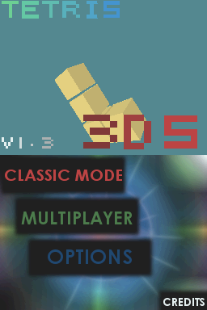
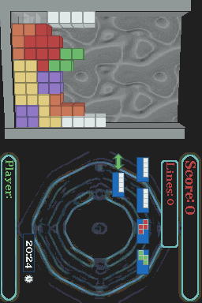

| HOME |
| Nintendo DS |
| Wii |
| GB/GBC |
| Other |
| Contact me |
| Tetris 3DS |
| This is the second game I did for the DS. The best thing of this game is that you can listen to the MP3 you want while you play. It has multiplayer mode (2 players in the same DS). I got first place in Scenery Beta 2008 in NDS games section with this game. Instructions Patch the game with the correct DLDI and copy the folder included in the .rar in the root of your card. Now you should try if it works right. If the game freezes at the start (black screens) I can't do anything. You can "fix" that by holding [L + R] when you load the game, it won't init FAT (and you won't be able to listen to your MP3 or save your records...). If the game loads ok it will tell you that it has created the save data file. Now you can convert your songs to MP3 and reduce their size and bitrate, follow the instructions of the readme. Controls Read the readme. Credits -Joat, Dovoto and WinterMute for libnds.
|


